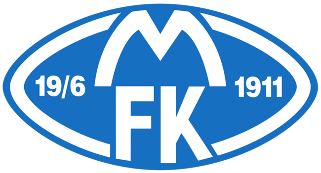

Molde Fotballklubb
Jeg har ikke alltid vært interessert i fotball, men jeg har ofte vært på Molde-kamper, helt siden jeg har vært liten. Familien har brukt å kjøpe sesongkort hvert år, så jeg har vært på ganske mange fotballkamper.
Molde er kjent for å være klubben som aldri gikk helt til topps, men som endelig ble en dominant klubb i Norge fra 2011 av, da Ole Gunnar Solskjær vant gull i klubbens 100. leveår. Den sesongen tror jeg at jeg var på hver hjemmekamp.
Molde er også kjent for sterk rekruttering av unge spillere, for så å selge de videre til utlandet. Noen spillere som har gått videre fra Molde er Mame Diouf, Erling Braut Håland, Mohamed Elyounoussi og selvfølgelig Ole Gunnar Solskjær.
Tottenham Hotspur
En annen klubb jeg følger er Tottenham Hotspur. Jeg har fulgt Tottenham i omtrent 8 år, rett rundt da Gareth Bale ble solgt til Real Madrid. I motsetning til Molde så har Tottenham ikke vunnet så mye de siste 10-15 åra, men har alltid hatt underholdene sesonger og gode spillere. De siste åra så er jo Harry Kane en av verdens beste spisser, og Heung Min Son er inne i sitt livs form så langt denne sesongen i premier league.
Grunnen til at jeg startet å følge Tottenham er litt fordi de er en underdog i Premier League sammenheng, og at de alltid har hatt noen x-faktor spillere. De var nylig i en champions league finale også, men det endte i skuffelse mot Liverpool etter verdens dårligste start med straffe til Liverpool helt i starten av kampen.